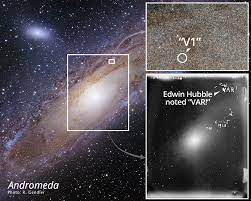
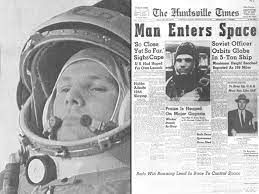

1923
Edwin Hubble Spotted a variable star using Hooker telescope.
1929
Hubbles Law was founded, which states that Galaxies are moving away from the Earth with increasing velocity depending on the distance from Earth.
1957
Cold war between US and Soviet Union started space race. Union of Soviet Socialist republics(U.S.S.R) launched the first artificial satellite in space to orbit the Earth.
1958
Space activities in the United States merged to form National Aeronautics and Space Administration(NASA).

1961
Soviets sent Yuri Gagarin into space. He became the first person to go to space.
After a couple of weeks
NASA sent Alana Shepard into space. John F. Kenedy challenged US to land a man on the moon and safely land him back to Earth.